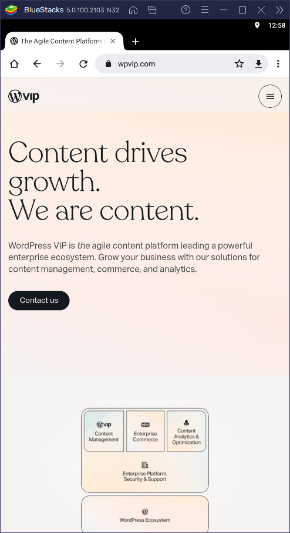
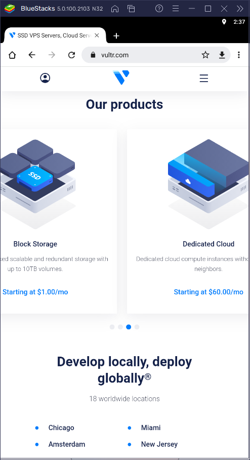
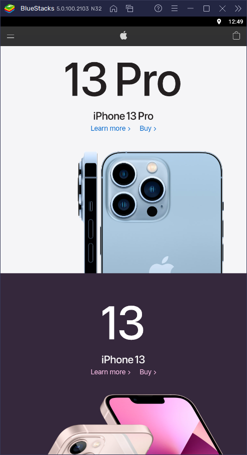

design principles
W02 Assignment
#1 White Space and Clean Design
Wordpress VIP - https://wpvip.com/
The clean design with lots of whitespace helps put total emphasis on the homepage headline and the few lines of copy underneath it. There is no clutter which helps draw attention to the CTA button. The clean design evokes a sense of confidence.
#2 PARC: Repetition
Vultr - https://www.vultr.com/
Vultr's homepage displays a series of tiles with images and copy that illustrate Vultr's different products. The repetition helps create a sense of how the product lines are similar but distinct from each other. The symmetry image design helps create a sense of uniformity.
#3 PARC: Contrast
Apple - https://www.apple.com/
Apple's homepage makes excellent use of contrast to showcase the iPhone 13 Pro and the iPhone 13. The backgrounds are light and dark colors, contrasting not in a jarring, clashing way, but in a visually pleasing way, with each color complementing the other and the device in the foreground.